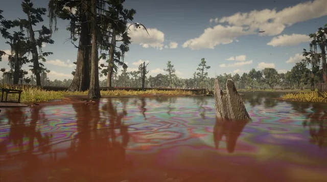
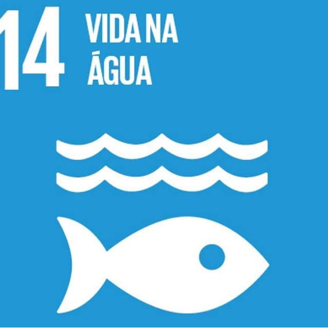

Vida na água



"Até 2025, prevenir e reduzir significativamente a poluição marinha de todos os tipos, especialmente a advinda de atividades terrestres, incluindo detritos marinhos e a poluição por nutrientes". Esse é o objetivo 14.1 da ONU, um dos 17 da ODS 30 (Objetivos de Desenvolvimento Sustentável) com o objetivo final da agenda em 2030.